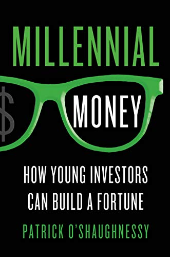

帕特里克·奥肖内西（Patrick O'Shaughnessy）是O'Shaughnessy Asset Management的投资组合经理，同时也是知名播客《投资者对话》（Invest Like the Best）的主持人。他的父亲詹姆斯·奥肖内西是量化投资领域的先驱，著有《华尔街有效投资策略》（What Works on Wall Street）。在这一家学渊源与自身实践的双重积累下，帕特里克于2014年写就《千禧一代的投资》，面向刚步入社会的年轻投资者，提供一套基于九十年市场历史数据的投资策略框架。
本书的出发点是一个现实判断：千禧一代所面临的退休保障环境，与其父辈截然不同。养老金制度已大幅萎缩，社会保障体系的可持续性存疑，这一代人必须主动管理自己的长期财富积累。奥肖内西指出，许多年轻投资者陷入了三种常见误区：过度集中于本国市场（本土偏见）、满足于跟上市场平均水平的被动回报，以及让情绪主导交易决策。他援引长期历史数据论证，这三种倾向都会显著侵蚀长期复利回报。
作为替代方案，奥肖内西提出了一套基于因子投资（factor investing）的主动量化策略。他强调五个在历史数据中持续有效的选股指标，鼓励投资者突破本国市场局限、在全球范围内寻找被低估的公司。书中对价格动量、股东回报率、估值比率等因子的解读相对平易，不需要读者具备深厚的金融工程背景。这使本书在量化投资入门读物中具有一定的差异化位置——它不是一本纯粹的学术论著，也不是泛泛的理财建议，而是试图将学术研究的结论翻译为年轻投资者可以实际操作的行动框架。
对于关注量化投资方法论与长期资产积累的读者，《千禧一代的投资》提供了一个年轻从业者的视角——既有对历史数据的严肃梳理，又保持了面向普通读者的可读性。书中对复利力量和长期持有耐心的反复强调，与价值投资的核心理念形成呼应；而对因子投资的系统介绍，则为有意探索量化策略的读者提供了入门路径。奥肖内西后来创立了Colossus播客网络，持续深耕投资智慧的传播，本书可视为他这一长期志业的早期成果。